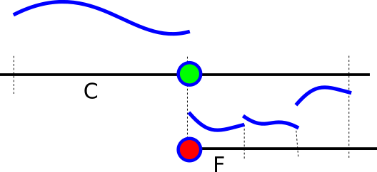

The AMR management is distributed among two files: The present header file hosts a couple of routines which realise the steps required for AMR. We write what and how things are done in C++. The routines pair up with the Python file exahype2.solvers.rkdg.actionsets.DynamicAMR. This Python file orchestrates the AMR operations, i.e. it decided when things are done. Most of the docu for the whole AMR business is however collected here.
AMR for DG is basically a Riemann problem and can be illustrated in 1d. Let there be two levels called coarse and fine as illustrated below:

Every face holds the polynomial value left and right of it. So the green face (it is a vertex here as we illustrate things in 1d, but it is really a face) holds the left solution after each initial step of the Runge Kutta scheme. A face is unique through its position and its level. So there are two faces at the same location: the green one and the red one.
Rationale and alternatives
Here's some terminology:
- A cell is refined if one of its adjacent vertices holds a refinement flag. This is called or-based refinement.
- A face therefore is called a refined face if one of its adjacent vertices holds the refinement flag.
- A hanging vertex is a vertex with less than 2^d adjacent cells on the same level. All other vertices are persistent.
- A hanging face is a face where no vertex is persistent, i.e. all adjacent vertices are hanging.
- Non-persistent data is not hold in-between two grid traversals.
To solve the Riemann problem, we have three options:
- We could project the coarse solution downwards, solve the Riemann problem there, and thus have a valid solution for F. In return, we could project the fine grid solutions also up into the green face, solve the Riemann problem there, and update C with the outcome.
- We could project the coarse solution down, solve the Riemann problem there, and restrict the solution up into the green face. No Riemann problem is solved there, but we use the restricted solutions of the fine grid Riemann problems.
- We restrict the solutions from the fine grid cell F into the right side of the green face and solve the Rieman problem in the green face. Then, we project the solution down to the hanging face. No Riemann problem is solved on the fine grid.
Once we benchmark these three options against our terminology, it becomes clear that only the third variant is an option. We need the left and right solution and this works only if face data are persistent.
We project every cell. So the projected polynomial arrives on every face, also the hanging one.
Algorithm
- In the primary grid sweep where we project onto the face (and maybe solve the volume):
- Clear the solution every non-refined face, so there are zeroes in there.
- Project solution onto face (this is done via the action set ProjectLinearCombinationOfEstimates anyway).
- If we encounter the destruction of a hanging face, restrict the projected solution. This can be done via an accummulation. We have cleared the solution before to zero.
- In the secondary grid sweep where we solve the Riemann problem and bring the solutions together:
- Solve the Riemann problem on the coarser face (is done anyway by action set SolveRiemannProblem).
- Project the solution down onto the hanging face when it is created.
- Update the fine cell with the projected data.
From the sketch above, we see that we don't need any sophisticated case distinction.
- Clear the face data in touchFaceFirstTime of the primary sweep. We can always do this, as the projection will overwrite it for those faces that point towards a fine grid cell.
- Always restrict/accummulate the solution if a hanging face is destroyed. We rely on a top-down tree traversal, so we know that any coarser face is already handled, even if we restrict and thus accummulate twice.
- Always interpolate the Riemann solution.